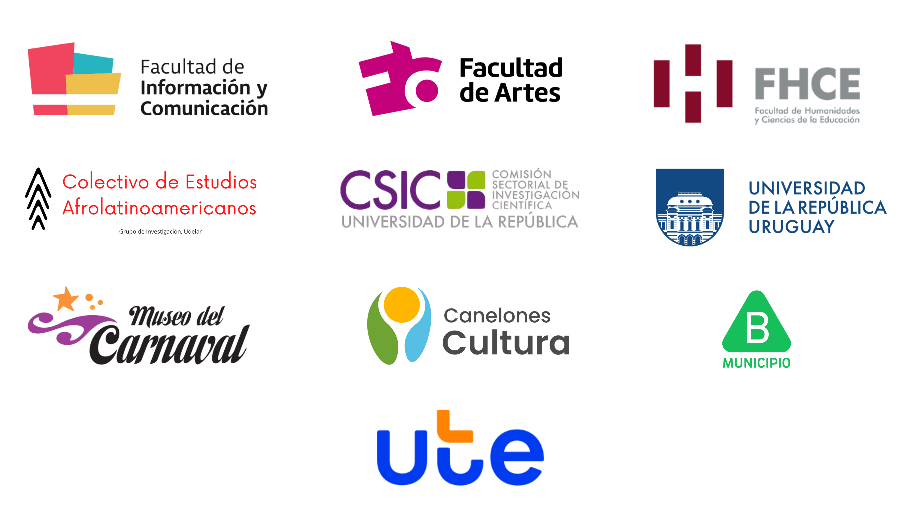

Understanding the celebration
Carnival is one of the most important traditional festivals in Uruguay. On an artistic and creative level and in terms of the number of people, events and structures involved, its significance for Uruguayan culture and society is undeniable. Diverse in its essence and forms, the 40-nights-long Uruguayan carnival is a complex and heterogeneous phenomenon that generates a multiplicity of disciplinary and interdisciplinary research approaches.
The Interdisciplinary Academic Conference on Uruguayan Carnival (CAICU by its Spanish acronym) presents a space for dialogue and encounter between researchers from different disciplines who study the multiple facets of Uruguayan carnival, with the aim of producing and promoting interdisciplinary academic knowledge on the subject.
The conference, whose first edition took place in September 2023, is aimed at researchers at different stages of their academic training from all institutes and departments of the University of the Republic (Udelar) -Uruguay's only public university- and other educational institutions in Uruguay and the rest of the world, as well as those who are interested in researching the Uruguayan carnival. We welcome cross-disciplinary proposals as well as artist/scholar collaborative interventions.
The full proceedings of the first edition of the conference (2023) are available here. The introduction and abstracts of all papers are translated into English.
2nd Edition - 2025
The 2nd Interdisciplinary Academic Conference on Uruguayan Carnival will take place October 6-10, 2025 at the Faculty of Information and Communication, University of the Republic, in Montevideo, Uruguay.
Important Dates
- February 17, 2025 - Call for papers opens
- July 15, 2025 - Paper submission deadline (extended)
- July 29, 2025 - Notification of review results
- October 6-10, 2025 - 2nd CAICU Conference
Call for Papers
We welcome submissions in two formats:
Conference Articles (up to 2,400 words): Research on Uruguayan carnival across its various dimensions and approaches. Each article should include at least: abstract (250 words), problem statement/research question, background and theoretical framework, methodology, and results/conclusions.
Exploratory Works (up to 800 words): Preliminary ideas or ongoing research that will be presented in poster format during the conference.
Language Requirements: Articles must be submitted in Spanish with English abstracts (250 words maximum) required for both formats. Translation support is available - contact us at contacto@caicu.uy.
All submissions must include up to 5 keywords and exclude author names for blind review process.
Venue
Faculty of Information and Communication
University of the Republic
San Salvador 1944
Montevideo, Uruguay
Organisers
Steering Committee
- Milita Alfaro, coordinator of the UNESCO Chair for Carnival and Heritage
- Gustavo Remedi, Professor of the Humanities and Education Sciences Faculty, of the University of the Republic (Udelar)
Program and Evaluation Committee
- Clara Biermann - Paris 8 University (France)
- Ricardo Klein - University of Valencia (Spain)
- Julio E. Pereyra - Afro-Latinamerican Studies Collective, Udelar
- Ivan Meresman Higgs - Queen Mary University of London (UK)
- Chiara Miranda Turnes - Information and Communication Faculty, Udelar
- Lucía Naser - Arts Faculty, Udelar
- Belén Pafundi - Museum of Carnival
Organizing committee
- Renata Bacalini - National University of Rosario (Argentina)
- Katia Casciano - Information and Communication Faculty, Udelar
- Judith González - Psychology Faculty, Udelar
- Cándida María Kamerbeek - University of Buenos Aires (Argentina)
- Camilo López-Moreira - Sr Camilo Photography
- Ivan Meresman Higgs - Queen Mary University of London (UK)
- Chiara Miranda Turnes - Information and Communication Faculty, Udelar
- Ana María Sarmiento - ARDIDA Group, Arts Faculty, Udelar
- Gianela Turnes - Humanities and Education Sciences Faculty, Udelar
All organisers are based in Uruguay unless mentioned.
Organising Institutions
Partners
